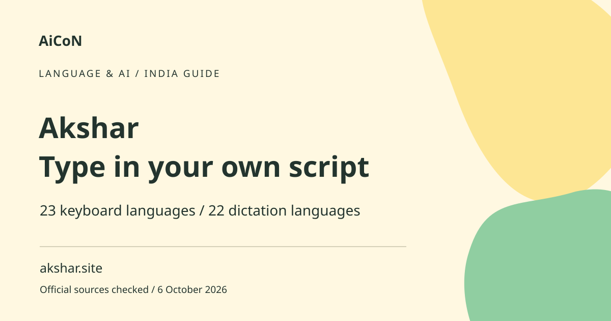

Akshar: Indic keyboard and offline dictation guide
Akshar is an Indic keyboard and notes app for Apple devices. The current developer pages list 23 keyboard languages and dictation in 22. Dictation requires iOS 26.4 or later according to the version notes.

Transliteration is not translation
Transliteration converts how a word sounds into another script. Typing a word in English letters can produce that word in Malayalam or another selected script; it does not necessarily translate an English sentence into Malayalam. Translation changes meaning between languages. Understand this difference before using the keyboard for a message that someone else must interpret.
How to use it, step by step
- Use akshar.site or the checked India App Store link and confirm the developer and device requirements. The current listing describes the app as free.
- Install on a supported device and open the app. For dictation, check the version-specific iOS requirement before expecting the microphone feature.
- Follow the developer's setup route to add Akshar in Settings > Apps > Akshar. Hold the globe key in a text field to switch keyboards.
- Choose the intended language from the keyboard toolbar. Malayalam is in the listed keyboard languages.
- Type the word phonetically using English letters, then inspect the suggested script. Tap the intended suggestion or use the documented space-to-accept action.
- For voice, open Akshar and choose Set Up Dictation. Download the speech model before relying on it without signal.
- Use the microphone key or the Notes microphone, speak clearly and inspect the resulting text. Correct names and numbers manually.
- Test a short message and offline behaviour on your own device before a longer or important task. Proofread the final message before sending it.
Free, supported platforms and language counts
The checked India store listing says free and describes iPhone/iPad use. The website mentions Mac, but the fetched store page did not verify macOS support. Do not infer an Android version. Earlier wording had different language counts; the current pages describe 23 for the keyboard and 22 for voice. These are not interchangeable coverage claims.
What offline and on-device mean here
The developer says the model runs on the device, dictation works without signal after setup and voice does not leave it. These are developer statements, not an independent security audit. Initial model download and optional iCloud sync can still need network access. If offline use matters, perform a real test on your device after downloads are finished.
Malayalam and other text checks
Pronunciation, spelling and dialect can change the suggested word. A phonetic input may have several plausible outputs. Check vowel signs, conjunct letters, proper names and amounts carefully. Ask a fluent reader when wording matters. A keyboard language being listed does not establish flawless recognition of every accent or code-switched sentence.
Privacy and keyboard permissions
Review the permissions shown by iOS instead of granting extra access automatically. The App Store privacy label says the developer does not collect data, but that is the developer's disclosure. The site also describes encrypted iCloud sync for notes and preferences. Remember that sending typed text into another app subjects it to that app's storage and sharing rules.
Useful everyday workflows
Use Notes for a longer draft and then copy the checked text into your destination. The developer lists conversion and sharing tools as well as dictation. A converted clipboard item can still contain private information; check the destination before sharing. For school or office work, proofread first and follow any rules about third-party keyboards and confidential documents.
Frequently asked questions
Is it an Android keyboard?
No Android version was established by the checked sources.
Does typing English translate it?
Phonetic typing is transliteration, not automatic meaning translation.
Does voice work offline?
The developer says yes after the model is downloaded. Test the required feature yourself.
Why does dictation not appear on an older iPhone?
Check compatibility and the dictation-specific iOS 26.4 requirement.
Official sources
Checked 6 October 2026. Expanded from an AiCoN short post delivered 6 October 2026. Portal screens and rules can change.